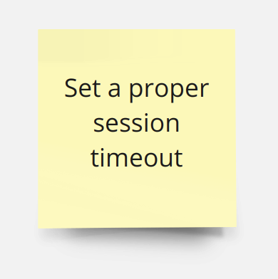

Background
Cornucopia: Heavily based on EoP
Focus
Primarily for Webapplication-Analysis
Recap: Gameplay
Choose first player by chance
Different topics
Different colors
Turn based
Proposals
Valid for all players?
If not discard card
A winner every round
Order A, K, Q, 10 ... 2
Round over
Winner chooses new topic
Topics
Notes

